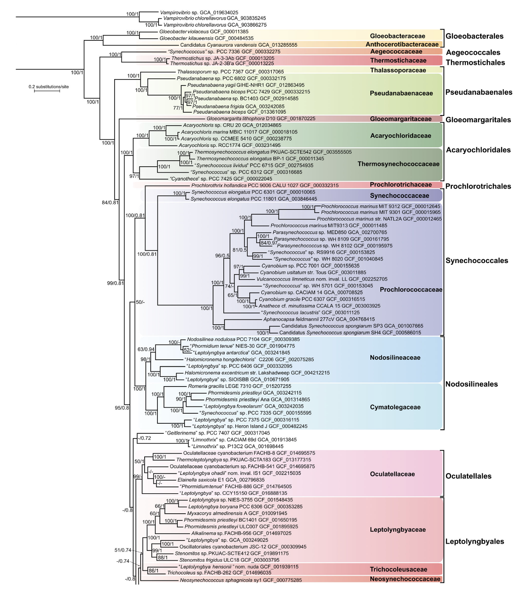
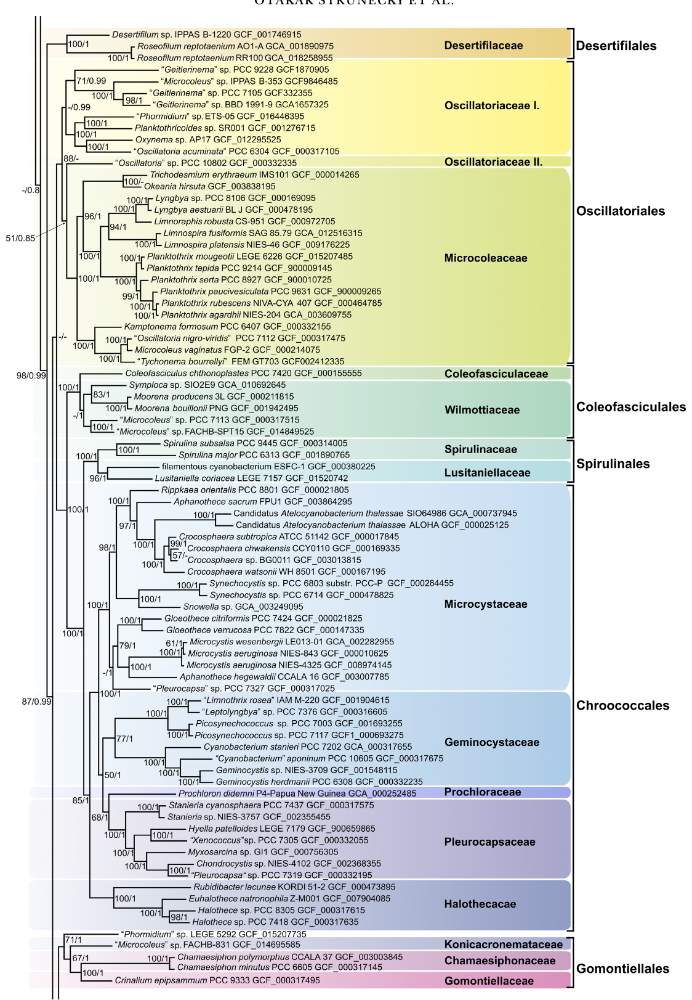
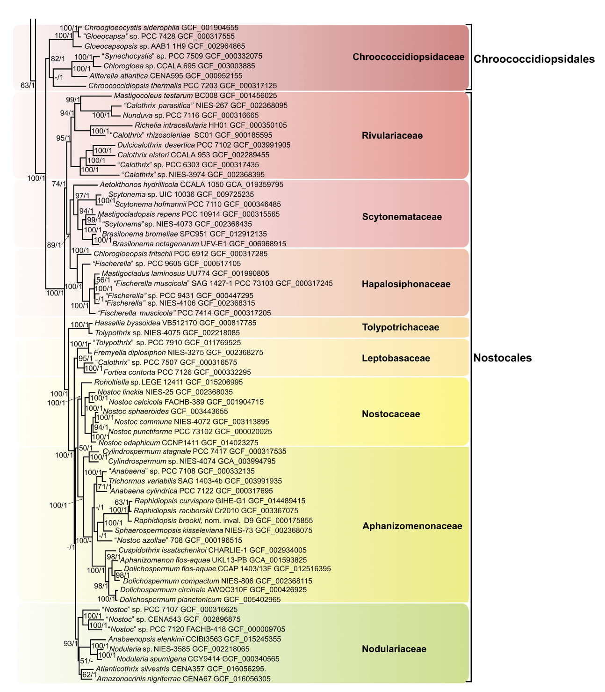
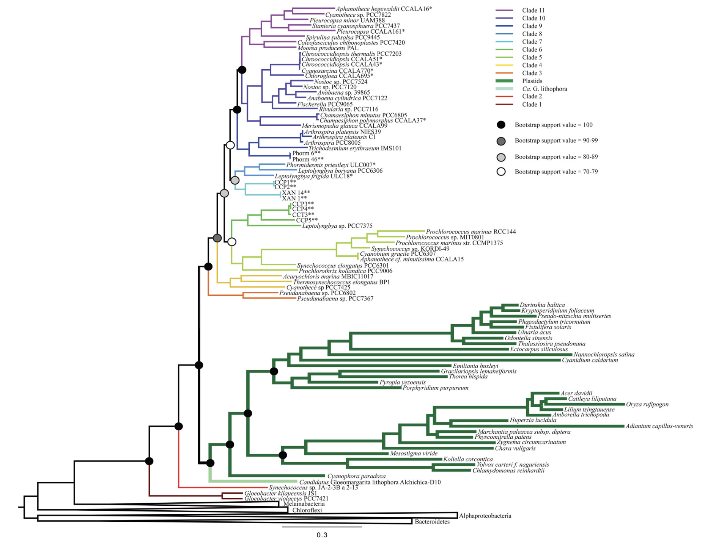

These amazing microbes have existed since the beginning of life on Earth...
The rise of an oxygenic atmosphere can be attributed to the origin of cyanobacteria, the first organisms known to produce oxygen (Skestakov and Karbysheva, 2016). Prior to the existence of cyanobacteria, the atmosphere consisted of only N, H2, CO2, and CH4 (Kasting et al., 2001). It is hypothesized that cyanobacteria arose between 2.6 and 2.7 billion years ago (Blank and Sanchez-Baracaldo, 2010) and changed the geochemical makeup of the atmosphere through their ability to turn H2O into O2 (Sergeev et al., 2002; Zavarzin, 2010). Through hundreds of millions of years, cyanobacteria were able to finetune their photosynthetic apparatus to compete with other anoxygenic microbes as oxygen in the atmosphere increased (Garcia-Pichel, 1998).
The photosynthetic ability of cyanobacteria makes them unique as prokaryotes. Photosystem II in the photosynthetic apparatus of cyanobacteria is responsible for the release of electrons and O2 into the atmosphere. Specifically, this "water-splitting" system allowed cyanobacteria to utilize water as an electron source when other electron sources were limited, and this was the key process in the origin of oxygenic photosynthesis (Shestakov and Karbysheva, 2016).
Cyanobacterial species are often assigned taxonomically based on morphological features (cell size, multi vs unicellularity, branching type, etc.), but as of 2021, cyanobacteria are now divided into 5 subsections rather than orders. These sections include Chroococcales, Pleurocapsales, Oscillatoriales, Nostocales, and Stigonematales (Castenholz, 2001). Since 2001, the utilization of 16S rRNA analysis has given rise to 80 new cyanobacterial genera, calling for a rework of existing phylogeny (Strunecký and Ivanova, 2023).
Due to their diversity, cyanobacteria are difficult to classify phylogenetically and taxonomically, but Strunecky and Ivanova (2023) conducted a study using available genomic data and broadly sampled 16s rRNA to propose a new taxonomic classification. By analyzing 120 housekeeping proteins using a maximum likelihood (ML) algorithm, the authors were able to generate the following updated phylogeny for cyanobacteria:   
Importantly, this study uses robust multigene phylogenetic trees to rebuild the cyanobacteria taxonomy. The authors were able to come up with 10 new orders and 15 new families of cyanobacteria, emphasizing the importance of genomic data for accurate taxonomic placement.
Plastids are descendants of cyanobacteria that spread across diverse eukaryotes as a result of endosymbiosis by Archaeplastida. Ancestral cyanobacterial genomes remain present in modern plastids, meaning that the placement of cyanobacterial plastids can be determined using sequence-based phylogenetic analyses. Moore et al. (2019) discovered plastids are sister to Gloeomargarita, and that the group diverges from groups earlier than Pseudoanabaena which was previously unreported. From this research, molecular clock analyses will be benefitted by new cyanobacterial microfossil calibrations.
The ability for eukaryotes to carry out photosynthesis through plastids is due to the cyanobacterial ancestry of plastids in which some early eukaryote engulfed a cyanobacterium. Both cyanobacteria and plastids have thylakoid membranes containing Photosystems I and II; however, the ancestral plastid lineage is quite different from the cyanobacterial ancestor (Moore et al., 2019).
Using high conserved protein sequences from cyanobacterial and plastid genes, Moore et al. (2019) found that the placement of plastids is actually much deeper than originally thought by previous analyses. The figure above (a ML tree using ssRNA proteins) shows a deep divergence of the "plastid clade", aka G. lithophora clade, that branches after Synechocossus but before Pseudoanabaena. This indicates that plastids hold an ancient ancestry. This tree shows a faster rate of plastid evolution relative to all living descendants of the most recent common ancestor of modern cyanobacteria. Studies like this one demonstrate the importance of accurate tree topology, appropriate rate modeling, and fossil calibrations in accurately depicting the evolutionary history of cyanobacteria and plastids.
With a unique aspect of cyanobacteria being their toxin production, the evolutionary history of this phenomenon comes into question. Dittman et al., 2013, performed an extensive analysis on the biosynthetic routes and evolutionary routes of toxin production. They identified that diverse biosynthetic pathways within cyanobacterial cells are responsible for cyanotoxin production. These pathways also tend to be evolutionarily conserved, indicating that these pathways may have some common ancestral origin. Environmental factors such as light, temperature, and nutrients were also found to contribute to regulation of cyanotoxin production. Finally, it is highly probable that cyanobacteria evolved to produce toxins as a response to selective pressures, indicating that cyanotoxin production is highly ecologically significant.
Blank, C. E., & Sánchez-Baracaldo, P. (2010). Timing of morphological and ecological innovations in the cyanobacteria – a key to understanding the rise in atmospheric oxygen. Geobiology, 8(1), 1–23. Dittmann, E., Fewer, D. P., & Neilan, B. A. (2013). Cyanobacterial toxins: Biosynthetic routes and evolutionary roots. FEMS Microbiology Reviews, 37(1), 23–43. Garcia-Pichel, F. (1998). Solar Ultraviolet and the Evolutionary History of Cyanobacteria. Origins of Life and Evolution of the Biosphere, 28(3), 321–347. Kasting, J. F., Pavlov, A. A., & Siefert, J. L. (2001). A Coupled Ecosystem-Climate Model for Predicting the Methane Concentration in the Archean Atmosphere. Origins of Life and Evolution of the Biosphere, 31(3), 271–285. Moore, K. R., Magnabosco, C., Momper, L., Gold, D. A., Bosak, T., & Fournier, G. P. (2019). An Expanded Ribosomal Phylogeny of Cyanobacteria Supports a Deep Placement of Plastids. Frontiers in Microbiology, 10. Sergeev, V. N., Gerasimenko, L. M., & Zavarzin, G. A. (2002). The Proterozoic History and Present State of Cyanobacteria. Microbiology, 71(6), 623–637. Shestakov, S. V., & Karbysheva, E. A. (2017). The origin and evolution of cyanobacteria. Biology Bulletin Reviews, 7(4), 259–272. Strunecký, O., Ivanova, A. P., & Mareš, J. (2023). An updated classification of cyanobacterial orders and families based on phylogenomic and polyphasic analysis. Journal of Phycology, 59(1), 12–51. Zavarzin, G. A. (2010). Initial stages of biosphere evolution. Herald of the Russian Academy of Sciences, 80(6), 522–533.